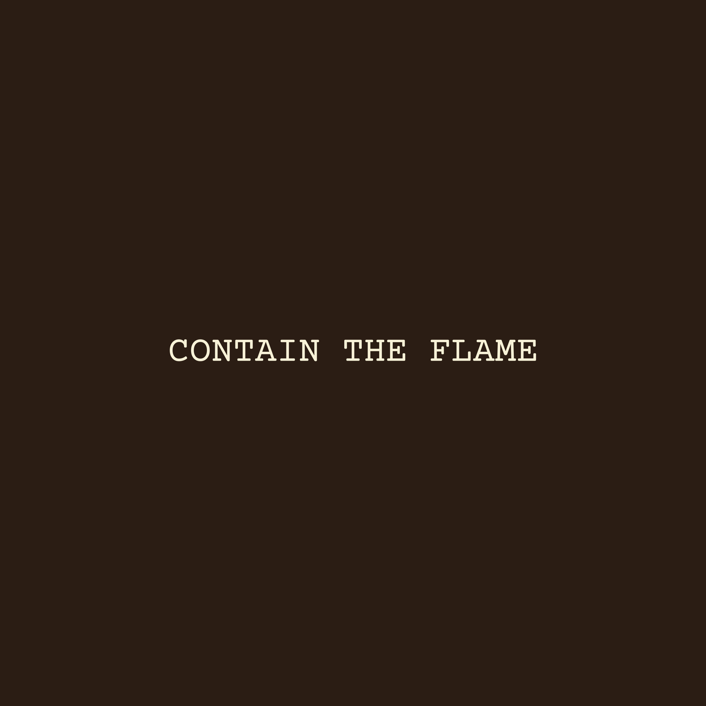
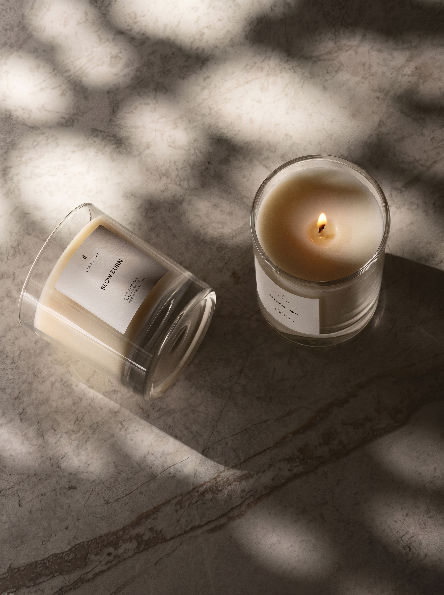

The Art of Kurinuki (削り抜き)
A departure from disposable luxury. Each vessel is individually hand-sculpted and cast in Nairobi—imperfect, tactile, and crafted to live in your space forever.
Aesthetic Philosophy
In traditional Japanese aesthetics, Wabi-Sabi represents the wisdom of finding quiet beauty in impermanence, asymmetry, and raw natural form.
Modern luxury often promises flawless uniformity—machine-molded glass designed to be discarded the moment the wick dies. We chose a different path.
Our Kurinuki vessels celebrate the mark of the hand: organic fissures, subtle carved facets, and rich tactile weight. No two vessels share the same silhouette. When you hold a Silk & Ember vessel, you are holding a single moment of sculptural intent.
“Nothing lasts, nothing is finished, and nothing is perfect. In imperfection lives soul.”

Hand-carved vessel featuring natural tactile texture and raw organic rim.
Ancestral Technique
Unlike wheel-thrown pottery or commercial glass, Kurinuki (削り抜き) translates to “carving out.” It is a slow, meditative dialogue between artist and form.
Work begins with sculpting a raw solid block. Every edge, ridge, and facet is shaped by hand in Nairobi—no molds, no spinning wheels, no automated presses.
Using traditional tools, the vessel's interior and exterior are carved out, exposing raw facets, organic lines, and natural texture.
Each piece is individually hand-cast and cured into an enduring, heat-safe, non-porous forever vessel with a luxurious stone-like feel.
Each cured vessel is hand-poured in small batches in Nairobi using our non-toxic rapeseed wax blend and small-farm botanicals.

Forever Object
When the last drop of wax warms down, your vessel’s journey has only just begun.
Standard candle containers are built cheap to be tossed out. A Kurinuki vessel is a hand-sculpted object. Once the burn is finished, simply wipe with warm soapy water to clean out the residual wax.